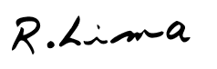

O mundo vive em um ciclo vicioso de busca pela riqueza e poder que causa as maiores desgraças na humanidade.
Todos nós somos educados desde criança a nos tornar uma peça da engrenagem composta pelas grandes organizações que dominam o mundo e usam o poder para enriquecer à revelia da felicidade das pessoas.
Quando você menos espera está numa armadilha…
… vivendo e trabalhando no piloto automático, sem propósito, direcionando a sua energia de vida em um trabalho que não significa nada pra você, mas que alimenta essa engrenagem e ajuda a nutrir o ciclo vicioso.
Como empreendedor e empresário eu sempre me questionei sobre essa realidade.
Me esforcei para não fazer parte desse Sistema.
Busquei de alguma forma quebrar esse ciclo e consegui fugir dessas armadilhas, montando um esquema de vida e trabalho com liberdade e propósito.
O meu propósito é conseguir me manter longe do Sistema, ajudar a acabar com a concentração de riqueza e poder no mundo e colaborar para que a vida seja mais equilibrada e as empresas mais justas.
